Abstract
A service-impacting network incident is rarely instantaneous. It usually begins as a change in propagation conditions, link margin, geometry, capacity or system state, and only later becomes an alarm, a ticket and a truck roll. Conventional monitoring responds when observed variables cross configured thresholds, persist for a configured number of intervals, and survive a process delay. The interval between the first observable change and conventional escalation is what this study calls the pre-escalation window.
We examine that interval in two network classes whose physics differ fundamentally: terrestrial microwave backhaul (fixed infrastructure, changing propagation) and LEO/NTN (changing infrastructure and changing propagation). Synthetic scenarios are generated from simplified physical and operational models — rain attenuation, path loss, fade margin, adaptive coding and modulation and capacity degradation for microwave; orbital geometry, elevation, slant range, serving-satellite state, handover and capacity for LEO/NTN. In every run, the same telemetry stream is presented to two arms: a modelled conventional threshold monitor and a read-only decision layer.
The original hypothesis did not survive. H1 — that the decision layer provides a measurable earlier-detection advantage — held at the default comparator (pooled median window 13 min) and failed under comparator sensitivity analysis. Against a degenerate comparator (a perfect, instantaneous, unsmoothed threshold monitor, better than any real NMS), the pooled median window inverts to −146 min. Part of that deficit is a measured cold-start artefact; removing it moves the number to −34 min, still negative, and the effect is entirely in LEO/NTN (−191 min as run; +2 min for microwave in every variant).
A different result survived. Across the self-clearing population, the conventional arm escalated unnecessarily in 66.7% of runs at the default comparator and 100% under the degenerate one, while the decision layer's unnecessary-escalation rate stayed at 4.4% across all 11 comparator configurations, together with an unchanged escalation F1 of 0.953 and an escalation false-positive rate of ~0.00. Conventional monitoring can be made arbitrarily fast; the price is paid in unnecessary escalation, and the decision layer is not on that trade-off curve.
The result therefore does not establish that intelligent monitoring is universally faster. It reframes the question:
Can a decision layer distinguish a developing, operationally meaningful event from a transient condition before escalation becomes necessary?
Within a simulation, the answer is yes with a measured residual. Whether it holds on real telemetry is unmeasured and is the next experiment.
How to read this study
The paper is organised so that the two network domains can be read independently before they are compared. Parts II and III are standalone technical sections; a transmission engineer can read Part II and skip Part III entirely, and a satellite engineer can do the reverse. The comparison (Part IV) deliberately comes after both, because most of the confusion in cross-domain monitoring arguments comes from comparing before understanding.
| Part | Question it answers |
|---|---|
| I | Why does the interval before escalation matter at all? |
| II | What happens physically in a microwave link when it degrades? |
| III | What happens physically in a LEO/NTN link when it degrades? |
| IV | Why are these two mechanisms not the same problem? |
| V | What is a pre-escalation decision layer, precisely? |
| VI | How was the simulation built, and what is assumed? |
| VII | What exactly was compared, in what populations? |
| VIII | What was observed, per domain and across domains? |
| IX | Which hypothesis failed, and how badly? |
| X | Which result survived the sensitivity analysis? |
| XI | What this study cannot claim. |
| XII | What has to be measured on real telemetry next. |
| XIII | Conclusion. |
Three labels are used throughout and are never mixed:
- ESTABLISHED — physics, standards or prior work, cited. Not our contribution.
- SIMULATED — produced by our simulation engine. Not measurement.
- NOT MEASURED — a design hypothesis or an open question. Never reported as a result.
PART I — The Operational Problem
1.1 The outage did not begin when the ticket was created
A ticket is an administrative event. It is created when a monitoring system's escalation criteria are met and a workflow fires. The physical event that eventually justified the ticket started earlier — sometimes minutes earlier, sometimes hours.
The full chain, as modelled in this study, is:
physical / geometric change
↓
telemetry changes (still within thresholds)
↓
threshold crossing on a smoothed KPI
↓
M-of-N persistence satisfied
↓
alarm raised
↓
correlation and escalation delay
↓
ticket
↓
operational response → service impact → recovery
Every arrow in that chain is a delay, and three of them are configured delays rather than physical ones: the smoothing window, the persistence rule, and the escalation/process delay. This matters more than it first appears, and Part IX is about what happens when you set all three to zero.
1.2 Defining the pre-escalation window
Definition. The pre-escalation window is the interval between the earliest state change that a decision layer considers actionable and the escalation point produced by a specified conventional monitoring configuration.
pre_escalation_window_min = t_conventional_escalation − t_decision_layer_actionable
The definition carries a consequence that this study takes seriously and that most vendor material does not:
A reported window without its comparator is not a result. "13 minutes earlier" is incomplete. Earlier than what monitoring configuration, tuned how, at what false-positive rate?
That is why comparator sensitivity (Part VIII.4) sits in the main experiment and not in an appendix, and why every window figure in this paper is reported paired with the error rates of the arm it was measured against.
1.3 The window is not universally positive, and not universally available
Three conditions must hold for a pre-escalation window to exist at all:
- The degradation must have a finite ramp. A cut fibre, a sudden power loss or a hardware failure with no precursor has no observable pre-escalation state. Nothing in this study claims otherwise.
- The telemetry must resolve the ramp. A 15-minute reporting interval cannot expose a 4-minute LEO pass geometry effect.
- The comparator must be slower than the layer. This is a property of the comparator, not of the layer, and it is the point at which the original hypothesis failed.
1.4 Escalation is not free
The reason the window matters operationally is not that earlier is intrinsically better. It is that escalation consumes something scarce: an engineer, a maintenance window, a truck, a spares budget, or the operator's attention. Alarm-management practice has treated operator attention as the binding constraint for decades — ANSI/ISA-18.2 and EEMUA 191 both formalise alarm rationalisation precisely because an alarm system that raises everything raises nothing [R11, R12]. ESTABLISHED — this is prior work, not a Velorona finding.
The asymmetry is what makes the problem interesting:
- If escalation is cheap, aggressive thresholds are rational. Set the smoothing window to 1, the persistence rule to 1-of-1, the delay to 0, and accept the false alarms.
- If escalation is expensive, the objective is no longer detect earlier but decide correctly, which includes deciding not to act.
This study measures both sides of that asymmetry, and only one of them turned out to be robust.
1.5 Detection, diagnosis and decision are three different problems
| Question | Output | Failure mode | |
|---|---|---|---|
| Detection | Has an observable left its expected range? | anomaly / no anomaly | alarms on healthy physics |
| Diagnosis | What mechanism explains the observation? | a fault class, with evidence | confident wrong cause |
| Decision | Given the diagnosis and its cost of being wrong, is escalation justified now? | escalate / wait / recommend | escalating a condition that self-clears |
Conventional threshold monitoring is a detection system that is used as if it were a decision system. That substitution is invisible while conditions are either clearly healthy or clearly broken. It becomes expensive in the region in between — which is exactly the region this study samples.
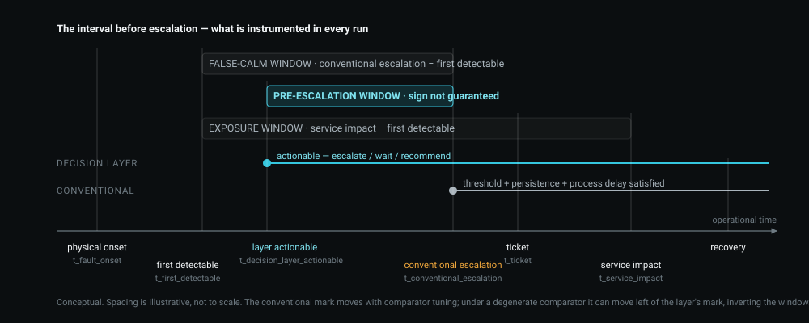
t_fault_onset, t_first_detectable, t_decision_layer_actionable, t_conventional_escalation, t_ticket, t_service_impact). The pre-escalation window is the interval between the layer's actionable point and conventional escalation; its sign is not guaranteed and depends on how the comparator is configured (Part IX). CONCEPTUALPART II — Terrestrial Microwave Backhaul: How Degradation Propagates Through the Link
This part is standalone. It can be read without Part III.
A terrestrial microwave hop is a fixed geometry with a variable atmosphere. The antennas do not move, the path length does not change, the frequency does not change. What changes is what is in the path, and what the radio does about it. That single sentence is why microwave degradation is comparatively tractable — and why the conclusions from it do not transfer to LEO/NTN without modification.
2.1 The link budget is the state variable
For a line-of-sight hop, received power is, conceptually:
P_r = P_t + G_t + G_r − L_FS − L_atm − L_rain − L_other
| Term | Meaning | Behaviour on a fixed hop |
|---|---|---|
P_t |
transmit power | constant, unless ATPC is compensating |
G_t, G_r |
antenna gains | constant, unless the antenna moves or the radome wets |
L_FS |
free-space path loss | constant — path length is fixed |
L_atm |
gaseous absorption (O₂, water vapour) | slowly varying with humidity and temperature [R4] |
L_rain |
rain attenuation | the dominant fast variable above ~10 GHz [R2, R3] |
L_other |
feeder, radome, misalignment, ageing | slowly varying, or a step on a fault |
ESTABLISHED. The relationship and the propagation terms are standard; the terrestrial design framework is ITU-R P.530-18 [R1] and the rain-specific attenuation model is ITU-R P.838-3 [R2].
The operationally important property is the one in the third column: on a terrestrial hop, L_FS is a constant. Everything that moves in the received level is either weather, hardware, or configuration. That is a small enough hypothesis space to be separable from telemetry. Part III shows what happens when it is not.
2.2 Rain attenuation: why the fast variable is fast
ESTABLISHED. Specific attenuation is modelled as a power law in rain rate:
γ_R = k · R^α [dB/km]
where R is rain rate in mm/h and k, α are frequency- and polarisation-dependent coefficients tabulated in ITU-R P.838-3 [R2]. Path attenuation is obtained by multiplying by an effective path length, shorter than the geometric one, because heavy rain cells are spatially limited and do not fill a long hop uniformly — the reduction factor is part of the P.530 design method [R1], and the rain-rate statistics that feed it come from ITU-R P.837 [R3].
Two consequences follow, and both are operational rather than academic.
First, the exponent. Because α is greater than 1 across the bands used for backhaul, attenuation grows faster than rain rate. A rain cell that doubles in intensity does not double the fade. The degradation therefore has a characteristic shape: slow at the leading edge of the cell, steep through the core, slow again at the trailing edge. That shape is the physical reason a ramp exists to be observed at all.
Second, the geometry of a rain cell moving across a path. A convective cell has a finite footprint and a translation velocity. It enters the path, crosses it, and leaves. The link's margin therefore falls and recovers on its own, with no intervention. This is the physical origin of the single most operationally relevant scenario class in this study: the self-clearing event (§2.8).
Simplification, stated. Our simulation applies a P.530-style path reduction to an instantaneous wet path. The published reduction factor is a long-term statistical design rule, not an instantaneous physical model. This is a modelling simplification and is item 5 in Part XI. It affects the absolute depth of a simulated fade; it does not create or remove the ramp whose observability this study is about.
2.3 From attenuation to the numbers on the NMS
The chain from weather to telemetry has no shortcuts in it:
OBSERVATION. A rain cell approaches the path.
MECHANISM. L_rain rises → P_r falls. The receiver's noise floor is unchanged, so the carrier-to-noise ratio falls by the same number of dB. Fade margin — the difference between current received level and the level at which the current modulation stops working — is consumed.
TELEMETRY CONSEQUENCE. RSL falls. C/N or MSE degrades. If ATPC is enabled, transmit power rises to compensate, which masks the RSL change at the far end and moves the evidence into the TX-power telemetry instead. Errored seconds may appear before any threshold is crossed.
OPERATIONAL CONSEQUENCE. The link is still up. Traffic is still flowing. Nothing on the alarm list has changed. This is the state that gives the study its name.
DECISION IMPLICATION. The question at this point is not "is there an anomaly" — there is, and a control chart will show it — but "is this a rain cell that will pass, or a hardware fault that will not?" That is a diagnosis question, and it is answerable from evidence that a threshold does not use: whether the degradation is symmetric across both directions, whether adjacent hops in the same weather correlate, and whether an independent environmental signal corroborates it.
2.4 ATPC, ACM, and the shape of graceful degradation
A modern hop does not fail; it downshifts. Two control loops act before anything is lost:
- ATPC (automatic transmit power control) trades headroom for margin, per direction, independently.
- ACM (adaptive coding and modulation) reduces the modulation order and coding rate as C/N falls, preserving the link at lower capacity.
The resulting operating trajectory:
4096QAM 5/6 (full capacity)
↓ C/N falls
lower-order modulation
↓
lower coding rate
↓
reduced throughput, link still "up"
↓
capacity below committed rate → service margin gone
↓
protection switch / reroute
↓
outage
ESTABLISHED. ACM is standard practice in fixed microwave systems and in satellite links; the ETSI fixed-service framework [R5] and DVB-S2X [R6] are the reference points for how the profile ladder is defined. SIMULATED / representative: our ACM ladder is representative rather than transcribed from a specific vendor datasheet (Part XI, item 8), so absolute capacity numbers from this study must not be quoted as product performance.
The operational point survives the simplification. ACM converts an RF problem into a capacity problem before it converts it into an outage. A monitoring system watching only availability sees nothing during the entire downshift sequence. A monitoring system watching only throughput sees a capacity drop with no cause attached. Both are correct and neither is sufficient.
2.5 Protection, reroute and blast radius
Where a protected path exists, the failure of one hop is absorbed. In the modelled network, protection and hop topology are explicit: a 12-site demand region requires 22 radio hops, 11 relay sites, 56 radios and 6 protection hops, at an engineered hop length of 18.32 km limited by rain rather than terrain (terrain would allow 45 km) [derived, data/coverage_comparison.csv].
DECISION IMPLICATION. Blast radius changes the cost of being wrong, and therefore changes the decision, not just the diagnosis. A degrading hop that carries a protected path and a degrading hop that isolates eleven downstream sites produce the same RSL telemetry and are not the same operational decision. Our microwave model computes downstream isolation for this reason; the LEO model does not model beam-sharing contention (Part XI, item 21).
2.6 What we did not model, and why it matters
NOT MODELLED. Multipath fading and atmospheric ducting are absent from the simulation. They are real, they dominate outage statistics on long, flat, over-water paths, and their signature — deep, fast, frequency-selective fades under clear-sky conditions, often at night — is precisely the case where a rain-correlation test would return "no environmental corroboration" and a naive diagnostic layer could reach for a hardware hypothesis.
Stating this plainly: our microwave results are conditioned on a rain-dominated impairment population. Any operator whose outage statistics are multipath-dominated should expect different diagnostic performance, and that is a reason to run the field validation in Part XII rather than to extrapolate from these numbers. Wet-radome effects are likewise not modelled.
2.7 Terrain and hop length are constraints, not variables
Hop length is set at design time by terrain, clearance and the rain-rate statistics of the region. In the modelled region, rain (42 mm/h at 0.01% exceedance, 18 GHz, 35 dB fade margin, 99.99% availability target) is the binding constraint at 18.32 km against a terrain limit of 45 km. This matters to the study for one reason only: it fixes the physical scale at which a rain cell is or is not able to affect several hops at once, which is what makes peer correlation across adjacent hops a usable discriminator.
2.8 The self-clearing event, defined physically
A self-clearing event is one whose ground-truth cause resolves without intervention. For microwave, the canonical case is a rain cell crossing the path:
cell approaches → attenuation rises → margin erodes → ACM downshifts
→ cell passes → attenuation falls → margin restored → capacity restored
At no point in that sequence is a truck useful. An escalation raised during it is technically consistent with the telemetry and operationally unnecessary — those two statements are not in conflict, and keeping them apart is the analytical core of this study.
2.9 What the conventional arm sees, and when
The modelled conventional monitor applies: smoothing over N reporting intervals, an M-of-N persistence rule, fixed thresholds against a nominal reference, and an escalation/process delay. Its arithmetic is not in dispute:
- a rolling mean of window W lags a linear ramp by ≈ W/2 samples;
- an M-of-N persistence rule adds ≈ M more;
- the process delay adds its own, unconditionally.
That lag is the entire mechanism behind a positive pre-escalation window at the default comparator. It is a property of the comparator's configuration, not evidence of intelligence in the other arm. Part IX is what happens when that lag is removed.
2.10 Microwave, summarised as a causal chain
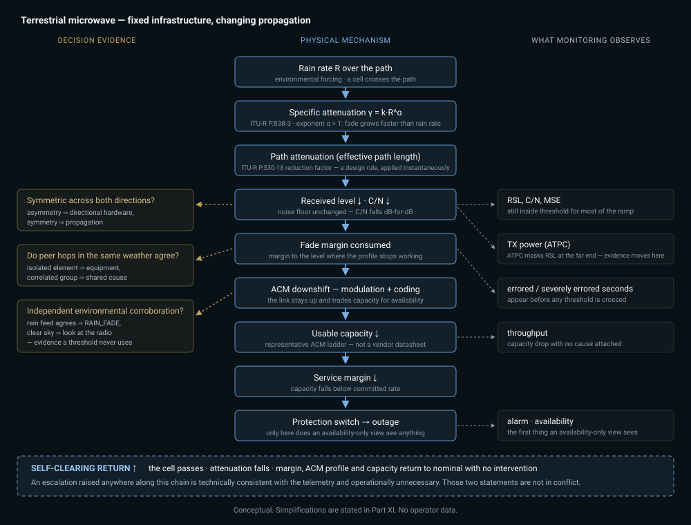
The chain in one line: fixed infrastructure, changing propagation, and a link that trades capacity for availability before it fails.
PART III — LEO / NTN: How Degradation Propagates Through a Moving Network
This part is standalone. It can be read without Part II.
In a LEO system the serving infrastructure moves. That single difference propagates into every layer of the monitoring problem: what "nominal" means, what an anomaly is, what a baseline is computed over, and whether a degradation is a fault at all.
3.1 Geometry is the first-order variable
For a circular orbit at altitude h, the elevation angle ε seen from a terminal changes continuously through a pass, and the slant range follows from it:
d(ε) = √( (R_E + h)² − (R_E·cos ε)² ) − R_E·sin ε
with R_E the Earth radius. ESTABLISHED — this is textbook orbital geometry [R7, R8]. The modelled constellation parameters, and what they produce:
| Parameter | Value | Source |
|---|---|---|
| Altitude | 550 km | parameter |
| Orbital period | 95.5 min | derived from altitude |
| Minimum service elevation | 25° | parameter |
| Maximum pass duration | 4.49 min | derived |
| Handovers per hour (per terminal) | 13.4 | derived |
| Footprint radius at min elevation | 940.5 km | derived |
| Satellites over the region at a time | 1 | derived |
[data/coverage_comparison.csv]
Read the third and fourth rows together. A terminal changes serving satellite roughly every four and a half minutes. Any statistic computed over a window longer than a pass is a statistic computed across multiple spacecraft.
3.2 Free-space path loss is no longer a constant
On a microwave hop, L_FS is fixed and can be calibrated out once. In LEO it varies continuously within a single pass, because the slant range varies from its minimum at the zenith point of the pass to its maximum at the horizon-side service limit. At 550 km with a 25° elevation mask, the range ratio across a pass is large enough that the geometry-driven component of received level dominates every other effect in the link budget except a deep fade.
TELEMETRY CONSEQUENCE. Received level, C/N and — through link adaptation — throughput all trace a repeating arc over each pass. That arc is healthy. It is what a correctly functioning link looks like.
OPERATIONAL CONSEQUENCE. A fixed threshold applied to received level alarms once per pass, on every terminal, forever. A control limit computed without a geometry model does the same, more slowly.
DECISION IMPLICATION. For LEO, the geometry-predicted component of received level must be removed before anything is treated as anomalous. This is not an optimisation. It is the difference between a usable monitoring signal and a per-pass alarm generator. In our method it is one of the two LEO-specific choices (Part V.6).
3.3 Doppler
ESTABLISHED, NOT MODELLED. A 550 km LEO pass produces a Doppler shift that sweeps through zero at closest approach, at rates that dominate NTN synchronisation design — the reason 3GPP's NTN work items specify Doppler pre-compensation and enlarged timing-advance handling [R9, R10]. Our simulation does not model Doppler, carrier recovery or synchronisation loss. It is named here because a reader from the satellite side will otherwise assume it is in the model, and because it is a real degradation mechanism whose absence bounds the generality of our LEO results.
3.4 The atmosphere on a slant path
ESTABLISHED. The Earth-space case is ITU-R P.618 [R13], which composes rain attenuation from the same specific-attenuation model as the terrestrial case [R2] but along a slant path, with an effective path length that depends on elevation, rain-height statistics and a horizontal reduction treatment. Gaseous attenuation follows P.676 [R4]. Tropospheric scintillation — rapid, shallow fluctuation from refractive-index turbulence — matters most at low elevation and is also covered by P.618.
Simplification, stated. Our LEO slant-path rain model omits the full P.618 reduction-factor treatment and therefore over-estimates fade at low elevation (Part XI, item 6). Since low elevation is exactly where the leo_low_elevation and leo_ground_rain scenarios live, this simplification is conservative in the direction that makes the decision problem harder, not easier — but it is still a simplification, and any absolute fade number from this study should be treated accordingly. Scintillation is not separately modelled.
3.5 The serving satellite is part of the state, not part of the background
A terminal's link statistics are only comparable against observations taken under the same spacecraft. The modelled space segment:
| Parameter | Value |
|---|---|
| Satellite capacity | 12,000 Mbps |
| Beams per satellite | 8 |
| Beams needed to cover the demand region | 2 |
| Region share of the satellite footprint | 0.0036 |
| Capacity attributable to the region | 43.3 Mbps |
[data/coverage_comparison.csv; EIRP, G/T, beam count and footprint are parameters, not measurements — Part XI, item 9]
MECHANISM. A spacecraft-side impairment — an RF subsystem degradation, a pointing/attitude drift — affects every terminal served by that satellite, while it is serving them, and no terminal afterwards. A ground-side impairment affects one terminal regardless of which satellite is overhead. A gateway/feeder impairment follows the gateway across handovers.
TELEMETRY CONSEQUENCE. Three physically distinct faults produce time series that, aggregated over an hour, look similar: intermittent degradation with partial recovery. The information that separates them is not in the KPI values. It is in which spacecraft, which beam and which gateway was serving at each sample.
DECISION IMPLICATION. Statistical baselines must be conditioned on the serving context. Without it, a spacecraft fault is smeared across the pass schedule and becomes statistically invisible. This is the second LEO-specific method choice, and it is the one with the largest measured effect in the entire study (Part VIII.6).
3.6 Handover and the gateway path
Each handover is a discontinuity in every RF observable and in the end-to-end path simultaneously: new spacecraft, new slant range, potentially new beam, potentially new gateway and therefore new terrestrial backhaul segment.
serving satellite sets → handover → new geometry → new link margin
→ possible new gateway → new feeder path
→ RTT step, brief loss, throughput transient
OPERATIONAL CONSEQUENCE. A step in RTT or a short loss burst at a handover boundary is expected behaviour. The same step at a non-handover moment is not. The same observation carries opposite meaning depending on where in the pass schedule it falls — which is the LEO-specific form of the general point this study keeps arriving at.
3.7 Coverage is not capacity, and neither is availability
Three quantities are routinely collapsed into one number in satellite discussions, and they are not the same:
| Quantity | Modelled value | What it means |
|---|---|---|
| Geographic coverage | 2,774,093 km² | area under the footprint at the elevation mask |
| Instantaneous service coverage | 10,000 km² | the demand region actually being served |
| Capacity attributable to the region | 43.3 Mbps | share of satellite capacity over the region |
| Capacity vs. demand ratio | 0.012 | how much of the demand that share covers |
| Satellites for continuous coverage | 307 | geometric lower bound, not a constellation design |
[data/coverage_comparison.csv; the microwave counterpart, for the same 12-site region, is an aggregate edge capacity of 12,073.6 Mbps and a capacity/demand ratio of 3.35]
The 307-satellite figure is a street-of-coverage packing lower bound (Part XI, item 10). It answers "how many spacecraft must exist for one to always be above the elevation mask over this region", not "how many satellites does a real constellation need", which additionally involves capacity, traffic distribution, inter-satellite links and regulatory constraints, none of which are modelled.
No fixed microwave-to-satellite equivalence is asserted anywhere in this study. The two technologies are compared as decision problems, not as substitutes.
3.8 What we did not model
NOT MODELLED, and each of these bounds the generality of the LEO results:
- inter-satellite links, and therefore any routing effect above the access link;
- beam-shape roll-off (a terminal at the beam edge is not distinguished from one at boresight);
- traffic-dependent congestion, and therefore capacity-driven degradation from demand rather than from physics;
- Doppler, carrier recovery and synchronisation loss (§3.3);
- J2 perturbation and Earth rotation in pass timing; orbits are circular and the Earth is spherical (Part XI, item 7) — adequate for elevation-driven link behaviour across a single pass, inadequate for any availability claim.
3.9 What is physics, what is parameter, what is simplification
| Element | Status |
|---|---|
| Orbital geometry, elevation, slant range, pass timing | derived from ESTABLISHED circular-orbit mechanics [R7, R8] |
| Free-space path loss vs. elevation | derived |
| Rain attenuation coefficients | ESTABLISHED, ITU-R P.838-3 [R2] — transcribed, not independently verified (Part XI, item 4) |
| Slant-path reduction | simplified, omits P.618 reduction factors [R13] |
| Satellite EIRP, G/T, beam count, footprint | parameters |
| Capacity ladder / link adaptation | representative, not vendor-specific |
| Handover cadence | derived from geometry |
| Doppler, ISL, beam roll-off, congestion | not modelled |
| Every telemetry value in the study | SIMULATED — no operator data |
3.10 LEO/NTN, summarised as a causal chain
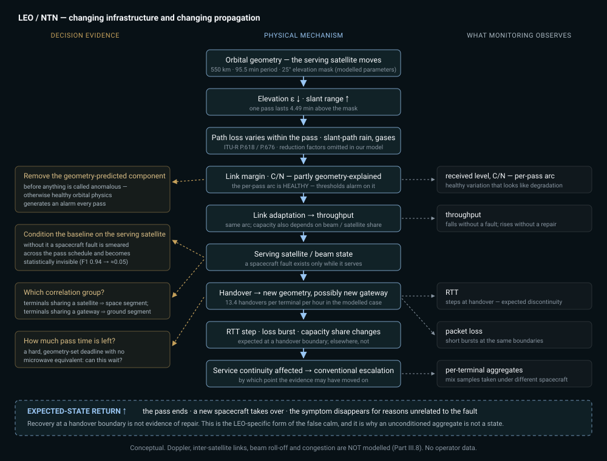
The chain in one line: changing infrastructure, changing propagation, and a link whose nominal behaviour is itself a moving target.
PART IV — What Is Different Between Them
Parts II and III described two mechanisms. This part states the difference, and it is not a difference of degree.
Microwave: fixed infrastructure, changing propagation. LEO/NTN: changing infrastructure and changing propagation.
Everything below follows from that.
4.1 Dimension-by-dimension
| Dimension | Terrestrial microwave | LEO / NTN |
|---|---|---|
| Topology | fixed; the same two antennas for the life of the hop | time-varying; the serving spacecraft changes every ~4.5 min at 550 km / 25° mask |
| Primary geometry | fixed path length, fixed clearance | orbital: elevation and slant range vary continuously within one pass |
| Dominant propagation variables | rain attenuation, gaseous absorption; multipath/ducting in reality (not modelled here) | geometry-driven path loss first, then slant-path rain, gases, scintillation |
| Typical degradation mechanisms | rain fade, directional hardware degradation, interference, configuration change | pass geometry, ground-side fade, spacecraft RF subsystem, pointing/attitude drift, gateway/feeder impairment |
| Serving-path state | stable; "which link" is a constant | part of the state; "which spacecraft, which beam, which gateway" changes within an hour |
| Handover | absent at link level; protection switching is an event, not a cadence | fundamental and periodic; ~13.4 per terminal per hour in the modelled case |
| Rain sensitivity | dominant fast variable; sets hop length (18.32 km rain-limited vs 45 km terrain-limited in the modelled region) | present, but second to geometry; worst at low elevation, where our model over-estimates it |
| Capacity behaviour | ACM downshift on a fixed path; capacity falls before availability does | capacity depends on beam and satellite share; a footprint may cover 2.77M km² while attributing 43.3 Mbps to the demand region |
| Telemetry interpretation | a level change is a change in the path or the radio | a level change may be the spacecraft, the path, the beam, the gateway — or the orbit doing exactly what it should |
| Main source of ambiguity | is the cause environmental or in the equipment? | is the cause a fault at all, or expected geometry / an expected handover? |
| Recovery behaviour | the cell passes; margin returns; no intervention needed | the pass ends; a new spacecraft takes over; the symptom may disappear for reasons unrelated to the fault |
| Correlation groups available | one: adjacent hops sharing weather | two independent ones: terminals sharing a satellite, terminals sharing a gateway — a space-vs-ground discriminator with no microwave analogue |
| Time constraint on the decision | none intrinsic; the link is there tomorrow | "can this wait for the next pass?" is a first-class question with a hard, geometry-set deadline |
| Operational decision context | dispatch a truck to a site; switch to a protection path | there is no truck for the space segment; the decision is which side of the link to investigate, and whether the evidence survives the handover |
The table is deliberately asymmetric in places. Forcing symmetry between two systems that fail differently is how monitoring architectures acquire the wrong abstractions.
4.2 The same telemetry, opposite meaning
Consider four observations that any NOC would recognise:
RTT ↑ loss ↑ throughput ↓ received level ↓
| Interpretation | Microwave | LEO / NTN |
|---|---|---|
| Received level falling steadily for 3 minutes | fade developing, or hardware degrading — a real state change either way | possibly the pass approaching the elevation mask: healthy |
| Short loss burst with an RTT step | path change or protection event — worth explaining | handover boundary: expected |
| Throughput down 40%, availability nominal | ACM downshift; the cause is in the RF chain | could be ACM, beam share, spacecraft state, or a handover to a spacecraft with different loading |
| Several terminals degrading together | shared weather, or a shared node | shared spacecraft, shared gateway, or shared geometry — three different faults, one signature |
This is the study's most portable conclusion, and it is not a claim about any product:
Telemetry without state is incomplete evidence.
A threshold evaluates a value. A decision needs the value and the state that value was produced in. In microwave the state is nearly constant, which is why threshold monitoring works as well as it does there. In LEO the state changes faster than most reporting intervals, which is why the same approach degrades — and why, in our results, the LEO domain is where every comparator effect is concentrated (Part VIII.4, Part IX).
4.3 What generalises, and what does not
Does not generalise: the physics, the fault catalogue, the discriminators, the timescales, the meaning of "nominal", the cost and even the possibility of physical intervention.
Does generalise: the shape of the decision. In both domains the operator is asking the same three questions in the same order — what changed, what explains it, is acting justified now — and in both domains a threshold answers only the first.
That is the claim tested by H4 (Part X), using one shared feature extractor, one shared decision layer and one shared metric set across both domains, with only the physics models and the hypothesis catalogue differing.
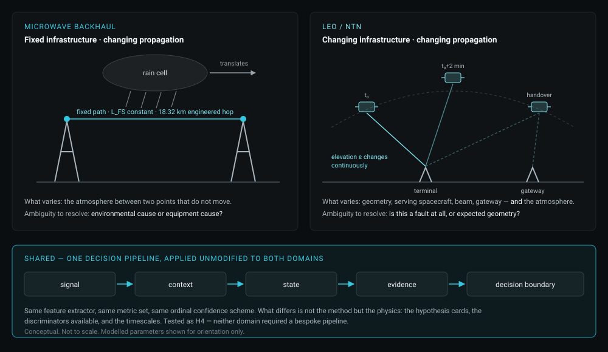
PART V — The Pre-Escalation Decision Model
This part describes what the decision layer does, at the level needed to interpret the results, without publishing how it does it. The simulation engine and the decision layer's implementation are not published.
5.1 What it is not
The decision layer is read-only by construction. It does not modify RF parameters, change routing, control subscribers, inspect payload traffic or execute remediation. Its strongest output is a recommendation carried to a human with an audit trail. There is no code path that writes to a network.
It is also not a learned model. No machine-learned component is included anywhere in this study (Part XI, item 15). That is deliberate: the interpretable baseline is established first, so that any future learned component has something to be compared against other than nothing.
Automation executes. Decision intelligence establishes whether execution is justified.
5.2 The seven-stage pipeline
Every recommendation passes through the same named stages:
OBSERVE → DETECT → CORRELATE → DIAGNOSE → ESTIMATE DECISION RISK
→ WAIT / ESCALATE / RECOMMEND ACTION → VERIFY
- OBSERVE — feature extraction from telemetry and peer-group context.
- DETECT — is the element outside its own statistical control limits, sustained rather than a single noisy sample?
- CORRELATE — does the anomaly co-occur with peers in the same correlation group, or is it isolated to one element?
- DIAGNOSE — evidence-based differential diagnosis across candidate fault classes (§5.5).
- ESTIMATE DECISION RISK — what does acting cost if the diagnosis is wrong, given the blast radius of the affected element?
- WAIT / ESCALATE / RECOMMEND ACTION — the decision gate: a list of named checks, each with a pass/fail and a human-readable reason.
- VERIFY — did the recommendation hold up against what actually happened?
Stages 2, 4 and 6 map onto the three problems separated in Part I.5: detection, diagnosis, decision. Conventional threshold monitoring implements stage 2 and treats its output as if it were stage 6.
5.3 Control limits: whose "normal"?
Per-element control limits are Shewhart 3-sigma limits [R14] computed from a robust baseline — the median and median absolute deviation (MAD) of the element's own history over a warm-up window, then frozen, not recomputed as a rolling window.
Two choices, both consequential:
Median/MAD rather than mean/standard deviation. MAD is a robust scale estimator [R15]; it is not distorted by the fault itself once a fault is in progress, which a mean-based baseline is.
Frozen rather than rolling. A rolling baseline adapts to the fault and eventually accepts it as normal. Freezing after warm-up preserves the robustness property for the whole run rather than only for the first sample of a fault.
The cost of that choice is stated rather than hidden: the layer needs a 120-minute warm-up before it has a baseline at all. A fixed threshold needs none. In a 600-minute run with warm-up included, the comparison is therefore biased against the layer — a bias we measured rather than assumed (Part IX.3).
5.4 The two LEO-specific choices
These are the reason LEO/NTN is not "microwave with a longer path" (Part III):
- Geometry correction. The geometry-predicted component of received level — the part explained by elevation changing continuously over a pass — is removed before anything is treated as anomalous. Without it, healthy orbital physics produces an alarm every pass.
- Context-conditioned baselines. Statistical baselines are conditioned on the serving context — for LEO, the serving satellite — because a terminal's statistics are only comparable against observations taken under the same spacecraft.
Both were tested, not assumed. The ablation result is in Part VIII.6 and it is the largest single effect measured in this study.
5.5 Hypothesis cards, and the right to say "ambiguous"
Each candidate fault class is a condition card with three kinds of condition evaluated against the extracted features:
- required — must all hold for the hypothesis to be considered at all; together they define the fault's physical signature;
- supporting — corroborate and raise confidence, but never create a verdict alone;
- refuting — take the hypothesis off the table entirely.
When two hypotheses reach the same top confidence tier the result is reported as AMBIGUOUS rather than resolved by an arbitrary tie-break. Ambiguity is a measured outcome, not a failure: n_ambiguous_decisions is a reported metric. A system that always produces an answer is not more useful than one that says the evidence does not separate two causes; it is less honest about the same evidence.
The specific conditions, predicates and thresholds are part of the unpublished engine.
5.6 Confidence is ordinal, not probabilistic
Confidence is reported as one of a small number of ordered tiers (LOW / MEDIUM / HIGH). The evidence a telemetry stream supplies supports an ordering of certainty, not a calibrated probability. A confidence tier must never be read or reported as a probability of correctness (Part XI, item 16).
5.7 The decision gate
The gate is the part that distinguishes this from a better detector. It asks, in order:
- Is the anomaly sustained and outside the element's own control limits?
- Does the correlation structure match the diagnosed class rather than a shared external cause?
- Is there a refuting condition on the table?
- What is the blast radius of this element, and therefore the cost of a wrong action?
- Is there a hard deadline (for LEO: remaining pass time) that makes waiting itself a decision with a cost?
- Given all of the above — escalate, wait, or recommend a specific non-dispatch action?
Each check is named and carries a human-readable reason. That is a requirement rather than a feature: an operational recommendation a VP cannot audit is an operational recommendation a VP cannot sign.
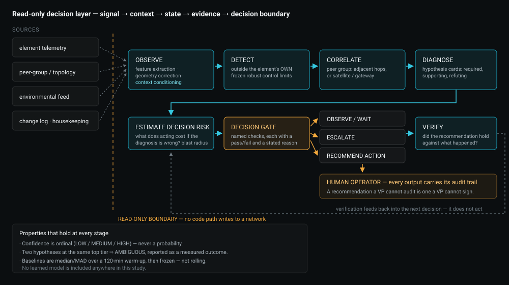
PART VI — Simulation Design
6.1 What a run is
A run is one (domain, scenario, seed) triple. Within a run:
scenario generator → baseline network state → physical model → telemetry stream
↓ ↓
fault injection (class, onset, ramp, hold, recovery) ┌──────────┴──────────┐
conventional arm decision layer
└──────────┬──────────┘
outcome metrics
Both arms see identical telemetry. The same stream is presented to a modelled conventional vendor/NMS monitor and to the decision layer, so any difference in outcome is attributable to the arm, not to a difference in what each arm was shown. This is the single most important design property of the experiment.
6.2 Clock, seeds and reproducibility
| Element | Value / property |
|---|---|
| Simulation clock | 1-minute resolution, duration = 600 min default (2,400 min in one warm-up variant) |
| Feature warm-up | 120 min before the decision layer has a baseline |
| Seeds | 30 per (domain, scenario) in the default sweep; 15 per configuration in every sensitivity sweep |
| Random streams | every stochastic component draws from a named, seed-derived stream, so changing the number of draws in one component does not perturb another |
| Reproducibility | runs are bit-reproducible; a dedicated reproducibility test enforces it |
6.3 Fault injection
Each scenario declares a ground-truth fault class, an onset time, a ramp duration, a hold duration, a severity and whether the cause is self-clearing. Severity is swept across a 7-point multiplier grid (0.4, 0.6, 0.8, 1.0, 1.3, 1.7, 2.2 × declared severity) in the severity sensitivity experiment, so the window is reported as a curve rather than at a single chosen severity.
Onset time, ramp duration and hold duration are chosen, not sampled (Part XI, item 11). This remains open and is a real limitation: a scenario whose onset always falls at the same point in the run cannot expose an interaction between onset timing and warm-up, or between onset timing and a LEO pass boundary.
6.4 The conventional comparator is a model, and it is parameterised
The conventional arm implements: KPI smoothing over N reporting intervals, an M-of-N persistence rule, fixed thresholds against a nominal reference, escalation and ticket process delays, and no geometry model.
It is parameterised to be fair — real smoothing windows, real persistence rules, real process delays — but it is not any specific vendor's product, and no claim about any commercial NMS is made or implied anywhere in this study. Its configuration is swept rather than assumed (Part VII.4), because the alternative is to publish a result that is an artefact of one chosen baseline.
6.5 Ground truth, and why it is a ceiling
The simulation constructs the ground truth. It therefore knows exactly when each fault began, what class it was, and whether it would have cleared on its own.
This is a strength for experimentation and a hard ceiling on interpretation:
Every precision, recall and F1 figure in this study is an upper bound on what is achievable with real, ambiguous, partially-labelled operational telemetry. None of them is a field measurement.
Real degradation has no label, no onset marker and no counterfactual. An operator dataset does not tell you what would have happened had nobody dispatched.
6.6 Provenance of every value
| Category | Examples | Status |
|---|---|---|
| Established physics | rain specific attenuation [R2], terrestrial LOS design method [R1], Earth-space method [R13], gaseous attenuation [R4], orbital geometry [R7, R8] | cited prior work — not our contribution |
| Derived | slant range, pass duration, handover cadence, hop count, footprint radius, per-region capacity share | computed from parameters + physics |
| Parameters | 550 km altitude, 25° elevation mask, 18 GHz, 35 dB fade margin, 42 mm/h rain rate at 0.01%, satellite EIRP/G-T/beam count, ACM ladder | chosen, stated, not measured |
| Simplifications | instantaneous use of a statistical path-reduction rule, omitted P.618 reduction factors, circular orbits, spherical Earth, no J2 | stated in Part XI |
| Simulated results | every metric, every timeline, every F1, every window | SIMULATED — not measured |
| Illustrative | every currency figure | parametric model, no operator cost inputs |
| Measured from real data | (none) | no operator telemetry is used anywhere |
6.7 Attribution boundary
Stated explicitly because it is easy to blur, and blurring it is how research pages lose credibility:
- Not ours: rain attenuation, path loss, adaptive coding and modulation, orbital mechanics, handover, statistical process control, alarm rationalisation. All established, all cited, none invented here.
- Ours: the decision architecture, the pre-escalation experiment design, the comparator sensitivity analysis, and the specific observations reported in Part VIII.
- Nobody's yet: whether any of it holds on an operator's live telemetry (Part XII).
6.8 Scenarios
Microwave
| Scenario | Ground-truth class | Self-clearing | Purpose |
|---|---|---|---|
mw_rain_cell |
RAIN_FADE | yes | Correct answer is WAIT. Measures unnecessary dispatch. |
mw_directional_hardware |
HARDWARE_DIRECTIONAL | no | Clean directional signature on a dry path. |
mw_hidden_in_storm |
HARDWARE_DIRECTIONAL | no | Hard case. Directional fault begins inside an active fade. |
mw_interference |
INTERFERENCE | no | Level healthy, C/(N+I) degraded. Recommend a spectrum scan, not a truck. |
mw_config_change |
CONFIG_CHANGE | no | Symmetric step on a dry path with a change-log entry. |
LEO / NTN
| Scenario | Ground-truth class | Self-clearing | Purpose |
|---|---|---|---|
leo_low_elevation |
LOW_ELEVATION_GEOMETRY | yes | No fault injected. Pure orbital geometry. Measures false-positive behaviour. |
leo_ground_rain |
PROPAGATION_FADE | yes | Local Ka-band fade at one terminal. |
leo_rf_subsystem |
RF_SUBSYSTEM | no | Spacecraft TX chain: directional, common to all terminals on that satellite. |
leo_pointing |
POINTING_ATTITUDE | no | Attitude drift, corroborated by housekeeping telemetry. |
leo_gateway_side |
GATEWAY_SIDE | no | Feeder/gateway impairment: follows the gateway across handovers. |
leo_hidden_in_rain |
RF_SUBSYSTEM | no | LEO analogue of the hidden-fault case. |
Scenario classes, grouped by what they test:
- Normal / no fault —
leo_low_elevation(geometry only). - Persistent degradation — continues until service impact.
- Self-clearing degradation — develops and resolves without intervention:
mw_rain_cell,leo_ground_rain,leo_low_elevation. - Context-dependent — the same observable carries a different meaning depending on serving state; concentrated in LEO.
- Composite / hidden — a directional fault beginning inside an active environmental event:
mw_hidden_in_storm,leo_hidden_in_rain.
6.9 Metric definitions
Timeline windows (minutes)
false_calm_window = conventional escalation − first detectable
pre_escalation_window = conventional escalation − decision-layer actionable
exposure_window = service impact − first detectable
decision_margin = service impact − decision-layer actionable
conventional_margin = service impact − conventional escalation
time_to_correct_diagnosis = first correct verdict − first detectable
Detection and escalation quality
Per-sample confusion matrices against three separate ground truths:
detect_*— predicted = sustained control-limit breach; truth = any fault active.layer_esc_*— predicted = layer escalated; truth = a persistent fault active.conv_esc_*— predicted = conventional escalated; same truth.
Ground truths (2) and (3) deliberately treat escalating on a self-clearing cause as a false positive, because operationally it is one.
Decision quality
n_ambiguous_decisions, n_wait_decisions, layer_unnecessary_dispatch, conv_unnecessary_dispatch.
Economics — ILLUSTRATIVE
exposure_conventional, exposure_decision_layer, exposure_delta, reported with sensitivity bounds attached. The provenance string ILLUSTRATIVE - not derived from operator financial data is carried in every row of the published results files. No monetary claim may be read from this study.
PART VII — The Comparative Experiment
Every number in Part VIII belongs to exactly one of the populations defined here. Metrics are not pooled across populations, and rates are not carried from one to another.
7.1 Populations
| Population | Composition | Runs | Published file |
|---|---|---|---|
| P1 — default sweep | 11 scenarios × 30 seeds, default comparator, declared severity | 330 | data/runs.csv, aggregated in data/summary.csv |
| P1-SC — self-clearing subset of P1 | 3 self-clearing scenarios × 30 seeds | 90 | subset of data/runs.csv |
| P2 — comparator sweep | 11 comparator configurations × (11 scenarios × 15 seeds) | 1,815 (165 per configuration) | data/sensitivity_comparator.csv |
| P2-SC — self-clearing subset of P2 | 3 self-clearing scenarios × 15 seeds, per configuration | 45 per configuration | subset of the same file |
| P3 — severity sweep | 10 scenarios × 15 seeds × 7 severity multipliers | 1,050 | data/sensitivity_severity.csv |
| P4 — warm-up variants | 3 clock treatments × 165 runs at the degenerate comparator | 495 | data/sensitivity_warmup.csv |
| P5 — residual diagnosis | full feature/hypothesis capture on the 3 runs where the layer escalated unnecessarily in P1-SC | 3 | data/sensitivity_residual_trace.csv |
leo_low_elevation is excluded from P3 because its declared severity is zero — it is pure orbital geometry, so there is nothing to scale.
Note on P2: the published file contains 2,145 rows rather than 1,815, because the default configuration is the shared centre point of all three one-factor sweeps and appears once per axis. There are 11 distinct comparator configurations, not 13.
7.2 The comparator grid is not a factorial
The sweep is three one-factor-at-a-time sweeps around a shared default, plus one degenerate point:
| Axis | Values | Default |
|---|---|---|
| Smoothing window (reporting intervals averaged) | 1, 3, 5, 10 | 5 |
| Persistence (M-of-N) | 1/1, 2/5, 3/5, 4/5 | 3/5 |
| Escalation delay (min) | 0, 4, 8, 15 | 8 |
| Degenerate point | smoothing 1 + persistence 1-of-1 + delay 0, simultaneously | — |
The degenerate configuration is a perfect, instantaneous, unsmoothed threshold monitor — deliberately better than any real NMS. It exists to answer the hardest version of the question: does the pre-escalation window survive against a comparator no vendor could actually ship?
Because the grid is not a full factorial, no interpolation between configurations is valid. A point that was not run does not exist, and reporting one would be fabrication.
7.3 Metric vocabulary — four rates that are not interchangeable
This study reports four different "false alarm" quantities. Conflating them is the most common way a monitoring comparison becomes meaningless, so they are named separately and never substituted:
| Metric | Unit of analysis | Population | Question it answers |
|---|---|---|---|
Escalation false-positive rate (conv_esc_fpr, layer_esc_fpr) |
per sample | all runs in the population | across all telemetry samples, how often did the arm signal escalation while no persistent fault was active? |
| Unnecessary-escalation (dispatch) rate | per run | self-clearing runs only (P1-SC, P2-SC) | on causes that would have resolved by themselves, how often did the arm escalate at all? |
Detection false-positive rate (detect_fpr) |
per sample | all runs | how often did the detector flag a sustained control-limit breach with no fault active? |
Escalation F1 (*_esc_f1) |
per sample, per run, then median across seeds | runs containing a persistent fault | how well did escalation track a real, persistent fault? |
Escalation F1 is undefined for a run whose ground truth contains no persistent fault — by construction there is nothing to escalate about. Those rows report n/a and their meaningful column is the unnecessary-escalation one. This is why the self-clearing scenarios and the persistent-fault scenarios are reported separately throughout Part VIII rather than pooled into a single quality score.
7.4 Comparisons actually run
- Per-domain, per-scenario, at the default comparator (P1) — the reference table.
- Cross-domain distribution comparison (P1) — window, time-to-correct-diagnosis, ambiguity count.
- Comparator sensitivity (P2) — window and its paired error rates across all 11 configurations, pooled and per domain.
- Self-clearing behaviour (P1-SC, P2-SC) — unnecessary escalation for both arms, and its stability under comparator tuning.
- Severity sensitivity (P3) — where the window opens and where it closes as severity scales.
- Cold-start fairness (P4) — three clock treatments of the same degenerate-comparator comparison.
- Residual diagnosis (P5) — what exactly happened on the runs where the layer was wrong.
- Context-conditioning ablation — decision layer with and without serving-satellite conditioning, on
leo_rf_subsystem. Single-scenario ablation; see the labelling in Part VIII.6.
7.5 The pairing rule
One reporting rule is enforced throughout, in the private engine's code and in this paper:
A pre-escalation window is never reported without the escalation error rates of the arms it was measured against.
A window is a latency measurement. Latency without precision is not a performance claim; it is half of one, and the missing half is the half that would have contradicted it.
PART VIII — Results
All results are SIMULATED. Ground truth is known by construction, so every quality metric is an upper bound (Part VI.5). Every window is reported with the comparator it was measured against.
8.1 Microwave results
Population P1 (30 seeds per scenario), default comparator, declared severity.
| Scenario | Window (min, median) | Layer esc. F1 | Conv. esc. F1 | Layer unnecessary esc. | Conv. unnecessary esc. |
|---|---|---|---|---|---|
mw_interference |
20 | 0.99 | 0.97 | 0% | 0% |
mw_rain_cell |
16 | n/a¹ | n/a¹ | 7% (2/30) | 100% (30/30) |
mw_directional_hardware |
13 | 0.92 | 0.90 | 0% | 0% |
mw_hidden_in_storm |
13 | 0.95 | 0.98 | 0% | 0% |
mw_config_change |
11 | 1.00 | 0.98 | 0% | 0% |
¹ Escalation F1 is undefined where the ground truth contains no persistent fault. The meaningful column for that row is unnecessary escalation.
What happened. Every microwave scenario produced a positive window at the default comparator, between 11 and 20 minutes. Both arms diagnosed the persistent-fault scenarios well; on mw_hidden_in_storm and mw_config_change the conventional arm's escalation F1 is actually higher than the layer's (0.98 vs 0.95, 0.98 vs 1.00 respectively — the layer leads on mw_config_change), which is reported rather than smoothed over. On a clean, dry-path, symmetric step, a threshold is a perfectly good instrument.
Why it happened. The mechanism behind the window is the comparator's own arithmetic (Part II.9): smoothing lags the ramp, persistence adds more, the process delay adds the rest. The mechanism behind the diagnosis differences is evidence the threshold does not use — per-direction asymmetry, peer correlation across hops sharing weather, and change-log corroboration.
What telemetry changed. Received level and C/N fall through the fade; per-direction asymmetry separates a directional hardware fault from a symmetric propagation event; on mw_interference the level stays healthy while C/(N+I) degrades, which is why the correct recommendation is a spectrum scan and not a truck.
What the conventional arm saw. A smoothed KPI crossing a fixed threshold, M-of-N times, then a delay. On mw_rain_cell it saw exactly that — and escalated, in all 30 seeds.
What the decision layer saw. The same telemetry, plus: the event was symmetric across both directions, it correlated with peer hops in the same weather, and an independent environmental signal corroborated it. Diagnosis: RAIN_FADE, self-clearing. Decision: WAIT.
Operational consequence. On the one microwave scenario where the correct action was to do nothing, the conventional arm generated 30 unnecessary escalations out of 30 and the layer generated 2.
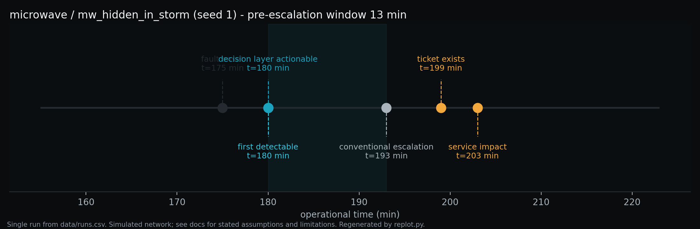
mw_hidden_in_storm, seed 1. A directional hardware fault beginning inside an active fade — the hard case, because the environmental event masks the directional signature. Single run, not an aggregate; it illustrates the timeline vocabulary, it is not evidence of typical behaviour. Regenerated from data/runs.csv. SIMULATED8.2 LEO / NTN results
Population P1 (30 seeds per scenario), default comparator, declared severity.
| Scenario | Window (min, median) | Layer esc. F1 | Conv. esc. F1 | Layer unnecessary esc. | Conv. unnecessary esc. |
|---|---|---|---|---|---|
leo_pointing |
250 (n = 6/30)³ | 0.95 | 0.30 | 0% | 0% |
leo_rf_subsystem |
189 (n = 28/30) | 0.94 | 0.34 | 0% | 0% |
leo_gateway_side |
9 | 0.98 | 0.97 | 0% | 0% |
leo_ground_rain |
7 | n/a¹ | n/a¹ | 0% | 100% (30/30) |
leo_hidden_in_rain |
7 | 0.89 | 0.39 | 0% | 0% |
leo_low_elevation |
— ² | n/a¹ | n/a¹ | 3% (1/30) | 0% |
² Neither arm escalated in any seed. Reported as a null result, not omitted. ³ The conventional arm escalated in only 6 of 30 seeds, so this window is conditioned on a small subsample and must never be quoted without its n.
What happened. The LEO results split into two groups, and the split is physical rather than statistical.
Group 1 — faults the conventional arm can see (leo_gateway_side): both arms perform similarly (F1 0.98 vs 0.97, window 9 min). A gateway-side impairment follows the gateway across handovers and produces a persistent, threshold-visible degradation.
Group 2 — faults distributed across the pass schedule (leo_rf_subsystem, leo_pointing, leo_hidden_in_rain): the layer's escalation F1 is 0.89–0.95 while the conventional arm's is 0.30–0.39. The large windows (189, 250 min) are not evidence of a fast layer; they are evidence that the conventional arm frequently never escalated at all, which is why they are reported with n and why they are not treated as a headline.
Why it happened. A spacecraft-side fault is only observable while that spacecraft is serving. Aggregated across a pass schedule, its signature is intermittent degradation with full recovery — which is also what healthy geometry looks like, and what a passing rain cell looks like. Threshold monitoring, applied to unconditioned aggregates, cannot separate them.
What telemetry changed. Received level and throughput trace their per-pass arcs; the fault adds a component that appears and disappears with the serving satellite. In leo_hidden_in_rain a spacecraft fault begins during a ground-side fade, so two mechanisms overlap in the same observables.
What the conventional arm saw. Repeated partial degradations that individually failed persistence, or crossed threshold and then recovered at handover. Result: escalation F1 0.30–0.39 on real, persistent faults — it is not that it alarmed too much here, it is that it could not hold a verdict against a signal chopped up by the pass schedule.
What the decision layer saw. The same telemetry with the geometry-predicted component removed and baselines conditioned on the serving satellite. Under conditioning, the fault stops being intermittent and becomes what it physically is: a persistent degradation of one spacecraft's RF chain, present whenever that spacecraft serves.
Operational consequence. For the space segment there is no truck. The decision is which side of the link to investigate and whether the evidence survives the next handover. A monitoring arm with escalation F1 of 0.34 on a real spacecraft fault does not support that decision; it produces intermittent tickets that close themselves.
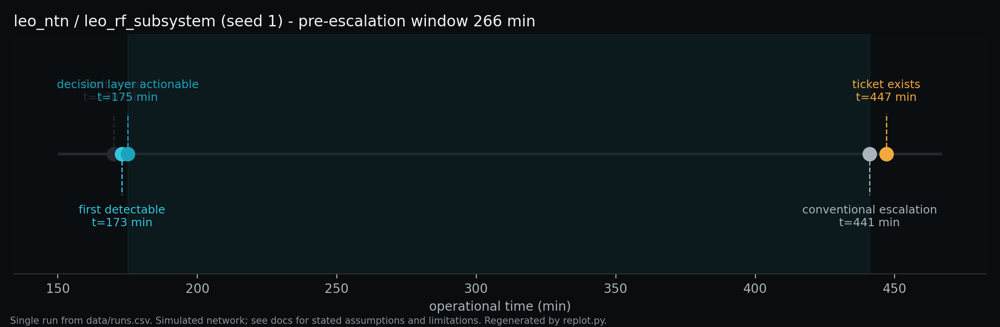
leo_rf_subsystem, seed 1. A spacecraft RF-chain degradation, common to every terminal that satellite serves and invisible between its passes. Single run, not an aggregate. Regenerated from data/runs.csv. SIMULATED8.3 Cross-domain comparison
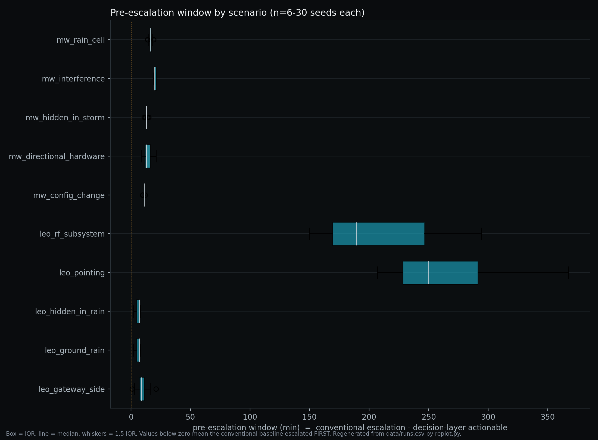
data/runs.csv. SIMULATED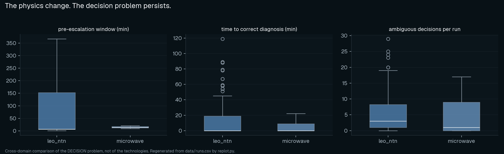
data/runs.csv. SIMULATEDPooled medians at the default comparator (population P1): microwave 14 min, LEO/NTN 7 min, pooled 13 min (n = 274 of 330 runs where a window is defined; a window is undefined where the conventional arm never escalated).
The distribution shapes differ more than the medians do. Microwave windows are tight and positive; LEO windows are bimodal — small where the conventional arm escalates normally, very large where it effectively never does.
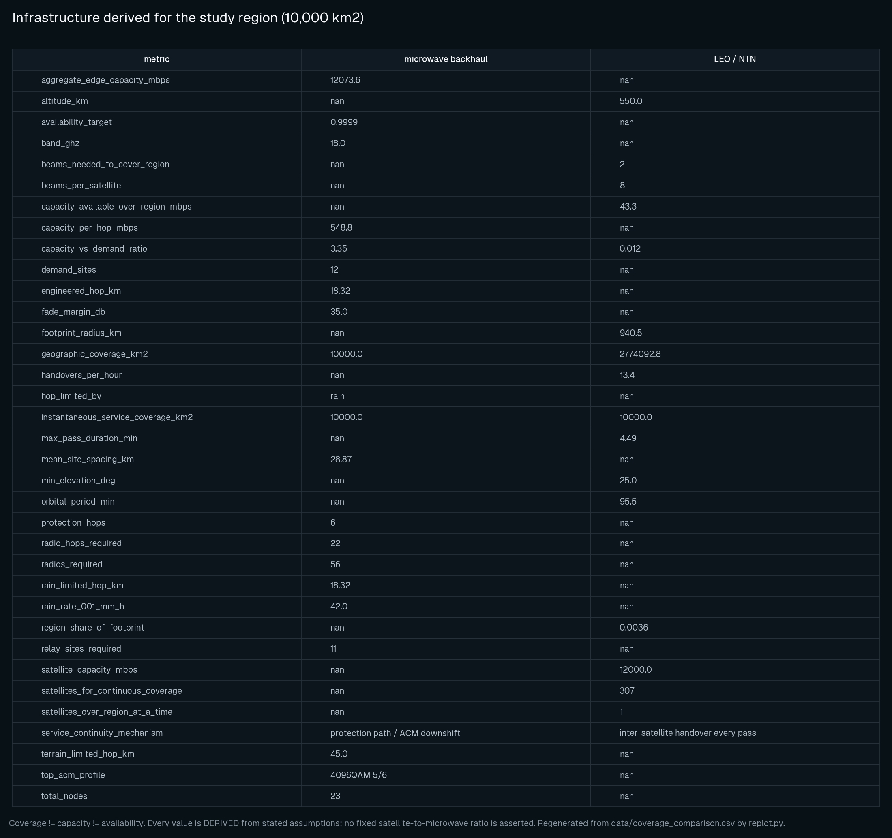
data/coverage_comparison.csv. SIMULATED8.4 Comparator sensitivity — the central result
Population P2: 11 configurations × 165 runs. Window is pooled across all scenarios; unnecessary-escalation rates are on P2-SC (45 self-clearing runs per configuration). Computed for this paper from data/sensitivity_comparator.csv.
| Comparator configuration | Window (min, pooled median) | Conv. esc. FPR (median / mean) | Conv. unnecessary esc. (P2-SC) | Layer unnecessary esc. (P2-SC) | Layer esc. F1 |
|---|---|---|---|---|---|
| smoothing 1 | 10 | 0.00 / 0.20 | 66.7% | 4.4% | 0.953 |
| smoothing 3 | 12 | 0.00 / 0.20 | 66.7% | 4.4% | 0.953 |
| smoothing 5 · persistence 3/5 · delay 8 (DEFAULT) | 13 | 0.00 / 0.22 | 66.7% | 4.4% | 0.953 |
| smoothing 10 | 15 | 0.00 / 0.25 | 66.7% | 4.4% | 0.953 |
| persistence 1/1 | 11 | 0.00 / 0.22 | 66.7% | 4.4% | 0.953 |
| persistence 2/5 | 12 | 0.00 / 0.27 | 68.9% | 4.4% | 0.953 |
| persistence 4/5 | 12 | 0.00 / 0.19 | 64.4% | 4.4% | 0.953 |
| escalation delay 0 | 3 | 0.00 / 0.30 | 68.9% | 4.4% | 0.953 |
| escalation delay 4 | 8 | 0.00 / 0.29 | 68.9% | 4.4% | 0.953 |
| escalation delay 15 | 18 | 0.00 / 0.14 | 42.2% | 4.4% | 0.953 |
| DEGENERATE (smoothing 1 + persistence 1/1 + delay 0) | −146 | 1.00 / 0.61 | 100% | 4.4% | 0.953 |
Read the last two columns first. Nothing in them moves. The decision layer's unnecessary-escalation rate is 4.4% (2 of 45) and its escalation F1 is 0.953 in every configuration, because the comparator's configuration has no effect on it. Everything that moves in this table belongs to the conventional arm.
Per domain, the same sweep:
| Configuration | Window, microwave (min) | Window, LEO/NTN (min) |
|---|---|---|
| smoothing 1 → 10 | 12 → 17 | 7 → 11 |
| persistence 1/1 → 4/5 | 12 → 15 | 7 → 7 |
| escalation delay 0 → 15 | 6 → 20 | 2 → 7 |
| DEGENERATE | +2 | −191 |
One-factor-at-a-time, the window moves modestly. Each axis alone shifts the pooled median by a few minutes in the direction arithmetic predicts: less smoothing, weaker persistence and shorter delay all make the comparator faster and the window smaller.
All three at once, it inverts. The degenerate configuration collapses the pooled median from 13 min to −146 min. That is not a small extrapolation of the one-factor results; it is a qualitative change, and it is the reason the original hypothesis is reported as failed (Part IX).
And it is bought, not earned. In the same configuration, conventional escalation FPR rises from a median of 0.00 to 1.00 (mean 0.22 → 0.61) and conventional unnecessary escalation rises from 66.7% to 100%. The degenerate comparator escalates on everything — it is "earlier" in the same sense that a smoke detector triggered by toast is early.
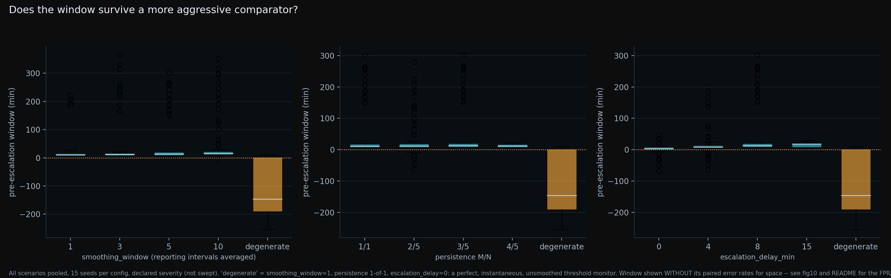
data/sensitivity_comparator.csv. SIMULATED
data/sensitivity_comparator.csv. SIMULATED8.5 Self-clearing scenarios
Population P1-SC: 90 runs (3 self-clearing scenarios × 30 seeds), default comparator.
| Arm | Unnecessary escalations | Rate |
|---|---|---|
| Conventional | 60 of 90 | 66.7% |
| Decision layer | 3 of 90 | 3.3% |
By scenario: conventional escalated in 30/30 on mw_rain_cell and 30/30 on leo_ground_rain, and in 0/30 on leo_low_elevation. The layer escalated in 2/30 on mw_rain_cell and 1/30 on leo_low_elevation.
In population P2-SC (45 runs per configuration, 15 seeds), the layer's rate is 4.4% (2 of 45) at every one of the 11 comparator configurations. The two rates — 3.3% on 90 runs and 4.4% on 45 runs — are different populations and are not interchangeable.
Why it happened. For mw_rain_cell and leo_ground_rain the fade is real, sustained and threshold-crossing. A detector is supposed to fire on it. The question the detector cannot ask is whether the cause will resolve on its own, which requires symmetry, peer correlation and environmental corroboration — evidence, not a value.
The residual is real and is not tuned away. All three layer failures were re-run with full feature and hypothesis capture (population P5):
mw_rain_cellseeds 12 and 21 fired the HARDWARE_DIRECTIONAL hypothesis: per-direction asymmetry (3.72 dB and 3.75 dB) crossed both the element's own control limit and the 3.0 dB nominal directional-imbalance floor for 5 consecutive samples, during an active, symmetric rain event. ATPC compensates each direction independently, and its compensation noise occasionally produces a directional signature by chance. In both cases the asymmetry cleared the floor by only 0.7–0.75 dB.leo_low_elevationseed 1 fired GATEWAY_SIDE at HIGH confidence: co-located terminals sharing a gateway co-degraded from orbital geometry alone — all terminals on a gateway see similar elevation over a pass — which the gateway-correlation condition cannot distinguish from a real feeder-side fault without an independent gateway-health signal.
Both diagnoses point at a specific, nameable evidence gap rather than at a tuning constant. Tuning against three known seeds is exactly the overfitting this study exists to avoid, so the residual is published instead.
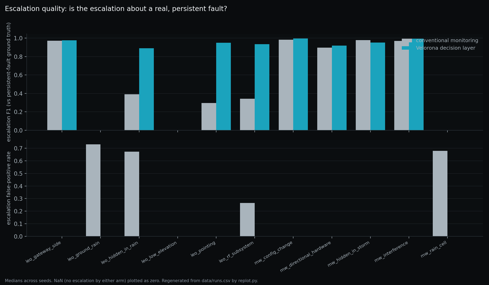
data/runs.csv. SIMULATED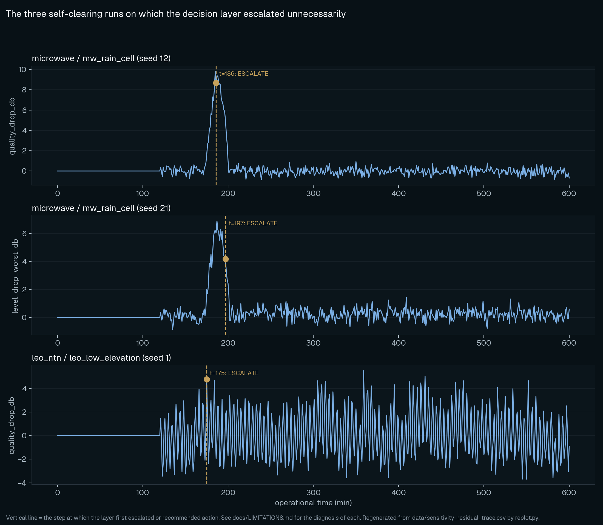
mw_rain_cell seeds 12 and 21 and leo_low_elevation seed 1 (population P5). Published because a residual that is only summarised is a residual that cannot be checked. Regenerated from data/sensitivity_residual_trace.csv. SIMULATED8.6 LEO/NTN context conditioning
This is the largest single effect measured in the study, and the strictest labelling in the paper applies to it.
The ablation. The decision layer was run on leo_rf_subsystem with and without conditioning each element's statistical baseline on its serving satellite.
| Configuration | Escalation F1 on leo_rf_subsystem |
|---|---|
| With serving-satellite conditioning | 0.94 |
| Without conditioning | ≈0.05 |
Why. A spacecraft-side fault is present only while that spacecraft serves. Pooled across a pass schedule, the fault's samples are mixed with samples taken under healthy spacecraft. The pooled distribution's median and MAD absorb the fault; the element never leaves its own control limits; the fault becomes statistically invisible rather than merely hard to see.
Operational consequence, stated as a design principle rather than a product claim:
Aggregate telemetry can hide the state that actually matters.
Labelling — read this before quoting the number.
- This is a single-scenario ablation, on one scenario, from the hypothesis set (H5). It is not a cross-domain measurement.
- There is no microwave equivalent, because microwave has no serving-satellite analogue.
- It was a design decision that was tested, not an emergent discovery — the requirement was found by the simulation failing without it.
- The generalisation "aggregate telemetry hides serving-state-dependent faults in operational networks" is NOT MEASURED. It is a hypothesis supported by one simulated ablation.
8.7 Severity sensitivity
Population P3: 10 scenarios × 15 seeds × 7 severity multipliers (0.4 → 2.2).
The window is reported as a curve rather than at one chosen severity, because a single-severity result is a chosen point on an unpublished curve. The qualitative shape: the window opens where degradation is severe enough to be observable but not so severe that it crosses the conventional threshold immediately, and closes at both ends — at very low severity neither arm escalates, and at very high severity both escalate almost together.
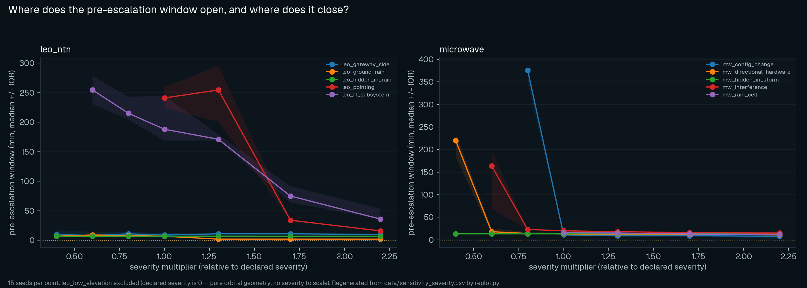
leo_low_elevation excluded (declared severity is zero — pure orbital geometry, nothing to scale). Regenerated from data/sensitivity_severity.csv. SIMULATEDPART IX — What Failed
A hypothesis with no falsification condition is a marketing claim. This one had a falsification condition, and it was met.
9.1 H1 (ORIGINAL) — not supported
Claim. For degradation with a finite ramp, there is a non-zero interval between the first sample that leaves the element's own statistical control limits and the moment conventional threshold monitoring escalates.
Falsified if. The median window is ≤ 0, or its IQR straddles 0, for the majority of scenarios.
Status at the default comparator (P1, 30 seeds). Not falsified in isolation: median 7–20 min for scenarios where both arms escalate, and 189–250 min for LEO space-segment faults where the conventional arm frequently never escalates at all.
Status against the comparator range (P2, 15 seeds per configuration). NOT SUPPORTED AS STATED.
The falsification condition was written expecting to be tested against one comparator. Tested against a comparator range, it fails: the degenerate configuration collapses the pooled median window from 13 min to −146 min, and does so on the majority of scenarios.
Per scenario, at the degenerate comparator (population P2, 15 seeds):
| Domain | Scenario | Window (min, median) | n with a defined window |
|---|---|---|---|
| microwave | mw_interference |
+8 | 15 |
| microwave | mw_rain_cell |
+4 | 15 |
| microwave | mw_directional_hardware |
+1 | 15 |
| microwave | mw_hidden_in_storm |
+1 | 15 |
| microwave | mw_config_change |
−2 | 15 |
| leo_ntn | leo_ground_rain |
−155 | 15 |
| leo_ntn | leo_hidden_in_rain |
−155 | 15 |
| leo_ntn | leo_gateway_side |
−195 | 15 |
| leo_ntn | leo_low_elevation |
−204 | 2 — small subsample, do not quote without n |
| leo_ntn | leo_pointing |
−217 | 15 |
| leo_ntn | leo_rf_subsystem |
−225 | 15 |
Two things are visible here that a pooled number hides:
- Microwave is essentially unaffected — every scenario lands between −2 and +8 minutes. Against a perfect instantaneous monitor, the microwave window is approximately zero, which is exactly what the arithmetic of Part II.9 predicts once the comparator's lag is removed.
- Every LEO scenario inverts, deeply. The entire pooled deficit is a LEO effect.
The honest summary: the raw lead-time claim, as originally stated, is not supported. The original H1 does not survive its own sensitivity analysis.
9.2 Why the failure is a result and not an error
It would have been possible to publish the 13-minute number. It is a real measurement, at a real comparator configuration, with a documented method. It would also have been misleading, for one reason:
The number describes the comparator's slowness at least as much as it describes the layer's speed. Change the comparator and the number changes. Publish it alone and a reader cannot tell which of those two things they are being sold.
That is why the sensitivity sweep is part of the main experiment rather than an appendix, and why the pairing rule (Part VII.5) exists.
9.3 Cold-start asymmetry — measured, material, and not sufficient
The decision layer needs a 120-minute warm-up to learn a per-element robust baseline. A fixed threshold needs none. In a 600-minute run with warm-up included in the comparison, the layer is charged for 20% of the run in which it could not have acted at all.
This is a bias in favour of the comparator, so it was measured rather than assumed away. A 25% threshold was fixed in advance for calling this term material. Population P4, degenerate comparator, three clock treatments of the same comparison:
| Variant | Treatment | Pooled median window | Microwave | LEO/NTN |
|---|---|---|---|---|
| W_a | as run — 600 min, warm-up included | −146 min | +2 | −191 |
| W_b | comparison clock started at t = warm-up for both arms | −34 min | +2 | −71 |
| W_c | 4× longer run, 2,400 min (warm-up is 5% of the run rather than 20%) | −154 min | +2 | −191 |
W_b differs from W_a by 77% — far outside the 25% band. Cold-start bias is therefore a material term, and this study says so rather than burying it.
And it does not reverse the finding. Even crediting the layer with the full 120 minutes in which it could not possibly have acted:
- LEO's window under a perfect comparator remains substantially negative (−71 min);
- microwave is +2 min in all three variants, entirely unaffected by warm-up;
- the long-run variant W_c stays within 5% of W_a, confirming the effect is a fixed-cost artefact rather than a scaling one.
So: cold start explains part of the deficit, not all of it. Both halves of that sentence are load-bearing.
9.4 What else did not resolve
H6 — the economics — is deliberately UNRESOLVED. Lead time converts to avoided exposure only through an actionable fraction and an avoidance probability, both less than 1, and it saturates. Acting on a self-clearing cause has strictly negative value. The model is parametric and every currency figure is labelled ILLUSTRATIVE, with the provenance string carried into every row of the results files.
No monetary claim may be published from this study until at least one operator supplies real cost inputs. This is the single largest open gap in the work, and it is a gap that no amount of additional simulation can close.
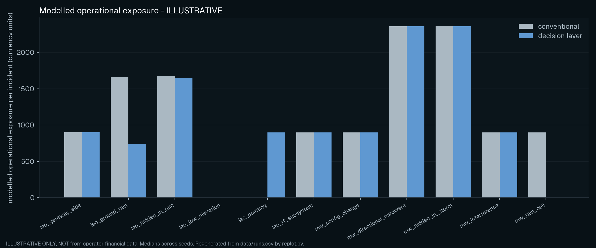
data/runs.csv. ILLUSTRATIVE — NOT A VALUE CLAIMPART X — What Survived
Two findings survive the sensitivity analysis. Neither is a lead-time claim.
10.1 H1 (REVISED) — the trade-off is real, and the layer is not on it
Claim. A conventional threshold monitor's escalation latency can be reduced arbitrarily by reducing smoothing, persistence and process delay — but its false-positive and unnecessary-escalation rates rise as it does. The decision layer's error rates are invariant to that tuning.
Falsified if. A comparator configuration exists that matches the decision layer's false-positive and unnecessary-escalation rates while escalating at least as early — a point at or below the layer's escalation FPR and at or above its window.
Status: not falsified, across all 11 swept configurations (population P2).
- The conventional arm's escalation FPR ranges from 0.00 (the least aggressive configurations) to 1.00 (degenerate), and its window moves accordingly, from modest positive values to −146 min pooled.
- The decision layer's escalation FPR does not move (~0.00 everywhere), nor does its unnecessary-escalation rate (4.4%), nor its escalation F1 (0.953).
- No configuration reaches both conditions at once. The configurations with FPR near 0.00 are the least aggressive ones, whose windows are smaller than the layer's at the default comparator. The only configuration whose absolute detection speed beats the layer — the degenerate one — buys it with FPR 1.00 and 100% unnecessary escalation.
This is a stronger and more defensible claim than the original H1, for a specific reason: it does not depend on which comparator you assume. It depends only on the shape of conventional monitoring's own trade-off curve, and on the layer not being subject to it.
The mechanism is not mysterious. The conventional arm's tuning parameters are all latency parameters — smoothing, persistence, delay. None of them adds evidence. Moving along that curve trades waiting time against certainty because waiting is the only evidence a threshold has. The layer's error rates are unaffected by that tuning because they are produced by a different quantity: differential evidence across peers, directions, environment and serving context.
10.2 H3 — the correct decision is sometimes to do nothing, and that is measurable
Claim. For self-clearing causes, escalation is a false positive with a real cost. An early-warning layer that cannot say WAIT is not an improvement.
Falsified if. The decision layer escalates on
mw_rain_cell,leo_ground_rainorleo_low_elevationat a rate comparable to the conventional arm.
Status: not falsified, with a measured residual.
| Population | Conventional | Decision layer |
|---|---|---|
| P1-SC (90 runs, default comparator) | 60 (66.7%) | 3 (3.3%) |
| P2-SC (45 runs per configuration, all 11 configurations) | 64.4% – 100% | 4.4%, invariant |
The layer is not claimed to be perfect on this failure mode — roughly an order of magnitude better than the comparator, with three diagnosed failures published in full (Part VIII.5).
This is the single most operationally relevant result in the study, and it is not a lead-time result. It says: on causes that resolve by themselves, the modelled conventional monitor dispatched two times out of three, and under aggressive tuning every time; the decision layer dispatched about one time in twenty-three, and that rate did not move when the comparator was tuned.
10.3 The other hypotheses
H2 — environmental and persistent causes are separable before the event ends. Not falsified. On mw_hidden_in_storm — a directional fault beginning inside an active fade — the layer's escalation F1 is 0.95. The LEO composite leo_hidden_in_rain reaches 0.89 against a conventional 0.39. The separation happens during the composite event, not after the environmental cause clears; a rule that only worked afterwards would be "wait and see", not diagnosis.
H4 — the decision problem generalises across domains; the physics does not. Not falsified, with the caveat in H5. One shared feature extractor, one shared decision layer and one shared metric set were applied to both domains; only the physics models and the hypothesis catalogue differ. Neither domain required a bespoke pipeline.
H5 — LEO adds discriminators and constraints that microwave does not have. Points 1, 2 and 4 supported.
- Geometry is a legitimate cause of degradation. A fixed threshold alarms on healthy physics; the layer removes the geometry-predicted component first.
- Two independent correlation groups (serving satellite, serving gateway) versus microwave's one (adjacent links) — a strictly richer space-versus-ground discriminator.
- A hard time constraint. "Can this wait for the next pass?" is a first-class question with no microwave equivalent, surfaced as a named gate check on remaining pass time.
- Statistics must be conditioned on the serving satellite — the ablation in Part VIII.6 (F1 0.94 → ≈0.05).
H6 — economics. UNRESOLVED by design (Part IX.4).
10.4 What survived, stated in full
- Pre-escalation information can exist in simulated network trajectories with a finite degradation ramp.
- The apparent lead-time advantage is strongly dependent on the conventional baseline and is not a property of the layer alone.
- Conventional monitoring can be made faster, at a measured cost in unnecessary escalation.
- The decision layer's unnecessary-escalation behaviour was substantially more stable across the tested comparator configurations — invariant, in this population.
- Network context materially affects interpretation, most sharply in LEO/NTN, where an unconditioned baseline made a real spacecraft fault statistically invisible.
- The value of a decision signal depends on operational consequence, not merely detection time.
Everything on that list is a statement about a simulation. None of it is a statement about an operator's network.
PART XI — Limitations
Stated in full, not summarised. Every item is a question a reviewer or a VP of network operations will ask. Item numbers are preserved from docs/LIMITATIONS.md so that references from elsewhere in this paper, and from the repository, remain valid.
11.1 Fundamental
- The networks are simulated. No result here is evidence about a real operator's network. The study establishes that a decision architecture is coherent and testable, not that it works in production. Only an operator pilot on real telemetry can do that.
- Ground truth is known by construction. Real degradation has no label. Every reported precision/recall figure is an upper bound on what is achievable with real, ambiguous, partially-labelled operational data.
- Single-fault scenarios. Except for the two
hidden_in_*composites, each run contains one fault. Real incidents overlap far more.
11.2 Physics — microwave
- ITU-R P.838-3 coefficients are transcribed, not verified. They must be re-checked against the official publication before appearing in a peer-reviewed paper.
- Design-rule and instantaneous attenuation are different quantities. The P.530-18 effective path length is a long-term statistical design rule. Using the same reduction on an instantaneous wet path is a modelling simplification, labelled in the source.
- The ACM ladder is representative, not from a vendor datasheet. Absolute capacity figures must be re-derived from a cited profile table before being quoted.
- No multipath or ducting, no wet-radome effect. Multipath dominates outage statistics on long, flat and over-water paths; its absence means our microwave results are conditioned on a rain-dominated impairment population (Part II.6).
- Blast radius is element-local. The microwave model computes downstream isolation; the LEO model does not model beam-sharing contention.
11.3 Physics — LEO / NTN
- LEO slant-path rain omits ITU-R P.618 reduction factors and therefore over-estimates fade at low elevation.
- Orbits are circular, the Earth is spherical, no J2 perturbation and no Earth rotation in pass timing. Adequate for elevation-driven link behaviour across one pass; inadequate for any availability claim.
- Satellite EIRP, G/T, beam count and beam footprint are parameters, not measurements. Any published number must state them.
- Constellation size is a geometric lower bound using a street-of-coverage packing efficiency. It is not a constellation design.
- (continued) No inter-satellite links, no beam-shape roll-off, no traffic-dependent congestion in the LEO domain. Doppler, carrier recovery and synchronisation loss are also not modelled (Part III.3).
11.4 Method
- Scenario onset times are chosen, not sampled; severity is swept, not chosen. Severity is swept across a 7-point multiplier grid per scenario, so the window is reported as a curve rather than a single chosen point. Onset time, ramp duration and hold duration remain fixed per scenario. That remains open.
- The conventional baseline is a model of vendor monitoring, and its sensitivity is measured, not assumed — and the headline window does not survive it. It is parameterised to be fair (real smoothing windows, real M-of-N rules, real process delays) but it is not any specific vendor's product. Under the degenerate comparator the pooled median window falls from 13 to −146 min while conventional escalation FPR rises from 0.00 to 1.00 (median) and unnecessary escalation from 66.7% to 100% — it buys the apparent lead with false alarms, not with earlier detection. The decision layer's own error rates do not move.
- Part of the degenerate-comparator deficit is a cold-start artefact — part, not all. Measured, not assumed: −146 min as run, −34 min with the comparison clock started at warm-up for both arms, −154 min over a 4× longer run. Excluding warm-up moves the number by 77%, over the 25% threshold fixed in advance, so cold-start bias is material. By domain it is entirely a LEO effect (−191 as-run vs −71 warm-up-excluded) and absent from microwave (+2 in all three variants).
leo_pointingconventional escalation occurred in only 6 of 30 seeds. Its window statistic is conditioned on a small subsample and must always be reported with n. The same caution applies toleo_low_elevationin the degenerate-comparator table (n = 2).- No learned model is included. The study deliberately establishes the interpretable baseline first. Any future learned component must be compared against this baseline, not against nothing.
- Confidence is ordinal, not calibrated. LOW / MEDIUM / HIGH is honest about what the evidence supports. It is not a probability and must not be reported as one.
- The decision layer has a small, diagnosed false-positive residual — 3 of 90 self-clearing runs (3.3%) versus 60 of 90 (66.7%) for the conventional arm. Not zero. All three are diagnosed in Part VIII.5: two
mw_rain_cellseeds where ATPC compensation noise produced a directional signature clearing the 3.0 dB imbalance floor by 0.7–0.75 dB, and oneleo_low_elevationseed where terminals sharing a gateway co-degraded from orbital geometry alone. The residual was diagnosed, not tuned away.
11.5 Economics
- Every currency figure is ILLUSTRATIVE. The model is parametric and its provenance string is carried into the results files. Until an operator supplies real cost inputs, no monetary claim may be published. This is the single largest gap in the study.
- Actionable-fraction and avoidance-probability are assumptions, bounded but not measured.
11.6 The NOT-MEASURED register
Claims that this study does not establish, listed so that nobody has to infer them from silence:
| Claim | Status |
|---|---|
| Production detection accuracy | NOT MEASURED |
| Operator-level false-positive performance | NOT MEASURED |
| Real dispatch or truck-roll reduction | NOT MEASURED |
| Real outage prediction | NOT MEASURED |
| Production network availability impact | NOT MEASURED |
| Commercial ROI or cost saving | NOT MEASURED — illustrative model only |
| Generalisation to arbitrary constellations | NOT MEASURED |
| Generalisation to arbitrary microwave systems or to multipath-dominated paths | NOT MEASURED |
| That aggregate telemetry hides serving-state faults in real networks | NOT MEASURED — one simulated single-scenario ablation |
| Performance against any specific commercial NMS | NOT MEASURED — and not claimed |
| Performance of any learned/ML component | NOT MEASURED — none is included |
PART XII — Field Validation: The Next Experiment
The next experiment is not another simulation.
12.1 The objective is falsification, not confirmation
The objective of field validation is not to prove the simulation correct. It is to determine where the simulation is wrong.
A simulation that survives contact with operator telemetry unchanged has almost certainly not been tested hard enough. The specific things expected to break, in order of likelihood:
- Telemetry resolution. A 15-minute polling interval erases most of the pre-escalation structure this study measures at 1-minute resolution. If an operator's data is 15-minute averaged, the first real finding will be about resolution, not about decisions.
- Labelling. There is no ground truth. Fault class, onset and self-clearing status must be reconstructed from tickets, change logs and engineer recollection — all of which are late, incomplete and partly wrong.
- Multi-fault reality. Overlapping incidents, maintenance windows and configuration changes co-occur constantly. Single-fault scenarios are the study's most optimistic assumption after ground truth.
- Multipath. Where multipath dominates, the environmental-corroboration evidence that carries the microwave diagnosis is weaker or absent.
12.2 The evidence layers, and what each can answer
Four layers, answering four different questions. They must not be collapsed into a single claim of "validation".
| Layer | Source | Question it can answer | Question it cannot |
|---|---|---|---|
| L1 — real telemetry, own testbed | physical microwave testbed | can the telemetry be captured, ingested and reconstructed into element state at usable resolution? | whether the decisions are right |
| L2 — independent real dataset | published third-party dataset | does the pipeline generalise beyond locally generated telemetry? | operational value |
| L3 — simulation | this study | how does the architecture behave under controlled faults, sensitivity sweeps and configurations too expensive or unsafe to create on a live network? | anything about real networks |
| L4 — operator validation | production telemetry, operator review | does the decision signal have operational value? | nothing else can answer this |
This paper is L3 only.
12.3 The validation sequence
real microwave telemetry
↓
telemetry ingestion (read-only)
↓
state reconstruction
↓
decision signal, retrospective
↓
operator review of the decisions, not the metrics
↓
prospective validation on live telemetry
Terrestrial microwave is the first target for a specific reason: a physical testbed provides direct access to real observations, and the microwave domain is where this study's own results are most stable across comparator configurations (Part IX.1). The LEO/NTN domain is where the simulation's claims are most sensitive, which makes it the more interesting second target and the less honest first one.
12.4 What an operator has to supply for the open questions to close
- Real cost inputs — dispatch cost, engineering hours, exposure per incident. Without these, H6 stays unresolved and no economic claim can be made.
- Real escalation configuration — the actual smoothing, persistence and delay in their NMS. This study's comparator is a model; an operator's own configuration is the only comparator that matters to them.
- Retrospective incident labels — enough to reconstruct approximate ground truth on a bounded window of history.
- A defined decision to evaluate against — dispatch / no dispatch, escalate / hold. Metrics are not the deliverable; decisions are.
PART XIII — Conclusion
A network does not become operationally interesting when it crosses an alarm threshold. It usually becomes interesting earlier. But "earlier" turned out not to be the useful part.
This study began with a simple hypothesis: that a read-only decision layer identifies degradation before conventional monitoring escalates. At one comparator configuration, it did — a pooled median of 13 minutes. Then the comparator itself was swept, and the claim came apart. Against a perfect, instantaneous, unsmoothed threshold monitor, the pooled median window inverts to −146 minutes; even after crediting the layer with the entire 120-minute warm-up it could not have acted in, the LEO domain stays at −71 minutes. The lead-time claim, as originally written, is not supported.
What is left is more useful than what was lost.
A monitoring system can be made arbitrarily fast. The cost of doing so is measurable and, in this simulation, steep: conventional unnecessary escalation rises from 66.7% to 100% on causes that would have resolved on their own, and per-sample escalation FPR rises from a median of 0.00 to 1.00. The decision layer's equivalents — 4.4% unnecessary escalation, ~0.00 escalation FPR, 0.953 escalation F1 — did not move under any comparator configuration tested. The trade-off is real, and one of the two arms is not on it.
The two domains also answered differently, in a way their physics predicts. Microwave — fixed infrastructure, changing propagation — is stable across comparator configurations; against a perfect monitor its window is approximately zero, and nothing about the result depends on tuning. LEO/NTN — changing infrastructure and changing propagation — is where every sensitivity effect concentrates, and where an unconditioned statistical baseline made a real spacecraft fault statistically invisible (escalation F1 0.94 → ≈0.05 in a single-scenario ablation). The general principle behind both: telemetry without state is incomplete evidence.
So the decision problem is not:
How early can we detect something?
It is:
How early can we establish that something deserves action — and how often do we act when nothing did?
That boundary cannot be established by simulation. Everything above is an upper bound produced by a system that knows its own ground truth, on networks that were designed to be legible. The next experiment has to run on telemetry from a network that was never designed to make the answer easy, with labels reconstructed after the fact, at whatever resolution the operator's collection actually provides.
That experiment is the one that decides whether any of this matters.
References
Cited work is established prior art. None of the physics, standards or statistical methods below were developed by AID Edge Inc. Where this study applies them, it applies them with the simplifications recorded in Part XI.
Terrestrial propagation and fixed radio systems
- [R1] Recommendation ITU-R P.530-18 (09/2021), Propagation data and prediction methods required for the design of terrestrial line-of-sight systems. International Telecommunication Union.
- [R2] Recommendation ITU-R P.838-3 (03/2005), Specific attenuation model for rain for use in prediction methods. ITU.
- [R3] Recommendation ITU-R P.837, Characteristics of precipitation for propagation modelling (P.837-8, 09/2025, current at the time of writing). ITU.
- [R4] Recommendation ITU-R P.676-13 (08/2022), Attenuation by atmospheric gases and related effects. ITU.
- [R5] ETSI EN 302 217-2, Fixed Radio Systems; Characteristics and requirements for point-to-point equipment and antennas; Part 2: Digital systems operating in frequency bands from 1 GHz to 86 GHz. (V3.4.1, 2025-07 at the time of writing.)
- [R6] ETSI EN 302 307-2, Digital Video Broadcasting (DVB); Second generation framing structure, channel coding and modulation systems...; Part 2: DVB-S2 Extensions (DVB-S2X). Cited as a reference point for how adaptive coding-and-modulation ladders are specified.
Earth-space propagation, orbital mechanics and NTN
- [R13] Recommendation ITU-R P.618-14 (08/2023), Propagation data and prediction methods required for the design of Earth-space telecommunication systems. ITU.
- [R7] D. A. Vallado, Fundamentals of Astrodynamics and Applications. Microcosm Press / Springer.
- [R8] G. Maral and M. Bousquet, Satellite Communications Systems: Systems, Techniques and Technology. Wiley.
- [R9] 3GPP TR 38.811, Study on New Radio (NR) to support non-terrestrial networks.
- [R10] 3GPP TR 38.821, Solutions for NR to support non-terrestrial networks (NTN).
Statistical process control
- [R14] W. A. Shewhart, Economic Control of Quality of Manufactured Product. Van Nostrand, 1931.
- [R15] P. J. Rousseeuw and C. Croux, "Alternatives to the Median Absolute Deviation," Journal of the American Statistical Association, 88(424), 1273–1283, 1993.
Alarm management and operational practice
- [R11] ANSI/ISA-18.2, Management of Alarm Systems for the Process Industries (2016 edition).
- [R12] EEMUA Publication 191, Alarm Systems: A Guide to Design, Management and Procurement.
A note on what citation means here. ITU-R recommendations are cited for the models this study uses or simplifies, not as endorsement of the simulation. ISA-18.2 and EEMUA 191 are cited because alarm rationalisation — the observation that an alarm system which raises everything raises nothing — is decades-old operational practice from process industries, not a new insight from this work. The contribution claimed here is narrower: placing a read-only decision layer inside a controlled pre-escalation experiment and subjecting the comparator itself to sensitivity analysis.
Appendix A — Figure index
Figures 1–5 are conceptual diagrams drawn for this paper. Figures 6–16 are regenerated from the published data by replot.py and carry the repository filenames listed below.
| # | Figure | Source | Repository file |
|---|---|---|---|
| 1 | Pre-escalation operational timeline | conceptual | — |
| 2 | Microwave causal chain | conceptual | — |
| 3 | LEO/NTN causal chain | conceptual | — |
| 4 | Microwave vs LEO/NTN comparison | conceptual | — |
| 5 | Decision architecture | conceptual | — |
| 6 | Example simulated microwave incident | P1, single run | fig06_timeline_microwave_mw_hidden_in_storm.png |
| 7 | Example simulated LEO/NTN incident | P1, single run | fig06_timeline_leo_ntn_leo_rf_subsystem.png |
| 8 | Pre-escalation window by scenario | P1 | fig01_pre_escalation_window.png |
| 9 | Cross-domain distributions | P1 | fig02_cross_domain.png |
| 10 | Infrastructure and capacity derivation | derived | fig05_coverage_derivation.png |
| 11 | Comparator sensitivity sweep | P2 | fig08_comparator_sensitivity.png |
| 12 | Latency–precision trade-off | P2 | fig10_latency_precision_tradeoff.png |
| 13 | Escalation quality | P1 | fig03_escalation_quality.png |
| 14 | Residual diagnosis | P5 | fig09_residual_diagnosis.png |
| 15 | Severity sensitivity | P3 | fig07_severity_sensitivity.png |
| 16 | Modelled economic exposure (ILLUSTRATIVE) | P1 | fig04_economic_exposure.png |
Appendix B — Reproduction
Published: every figure in figures/, the data needed to regenerate them (data/runs.csv, data/summary.csv, data/coverage_comparison.csv, data/sensitivity_*.csv), the research hypotheses and their falsification conditions, the experiment design, the limitations, and a method description at the level needed to interpret the results.
Not published: the simulation engine — the network models, the physics implementation, the conventional-monitoring model, and the decision layer's feature extraction, rule engine and hypothesis cards; any threshold constant, condition predicate or hypothesis-card content.
python replot.py # regenerates every result figure from the published CSVs alone
python build_readme_table.py
python build_article_page.py # regenerates this page from docs/ARTICLE.md
Reproducing the underlying runs requires the private simulation engine. Reproducing every published figure and table does not.
Appendix C — Relationship to the other published documents
This paper is a reorganisation, not a replacement. Every claim, caveat, number and limitation in it comes from the same source documents that remain published in this repository:
| Source document | Where it appears in this paper |
|---|---|
docs/METHOD.md |
Part V |
docs/EXPERIMENT_MATRIX.md |
Parts VI and VII, Part VIII.1–8.2 tables |
docs/RESEARCH_HYPOTHESES.md |
Parts IX and X |
docs/LIMITATIONS.md |
Part XI (item numbering preserved) |
docs/PROVENANCE.md |
Part VI.7, and the provenance note below |
README.md |
Abstract, Part VIII |
The interactive instrument on the site's home page is generated from the same underlying data (site/data/instrument.json). Where a number appears in both, it is the same number; if they ever diverge, the CSVs in data/ are authoritative.
Provenance note. Three of the source documents are adapted from AID Edge Inc.'s internal research repository, with internal file, module and command references replaced by descriptions of the thing they named. No claim, caveat, number or argument was altered in that process; the full before/after list is in docs/PROVENANCE.md.